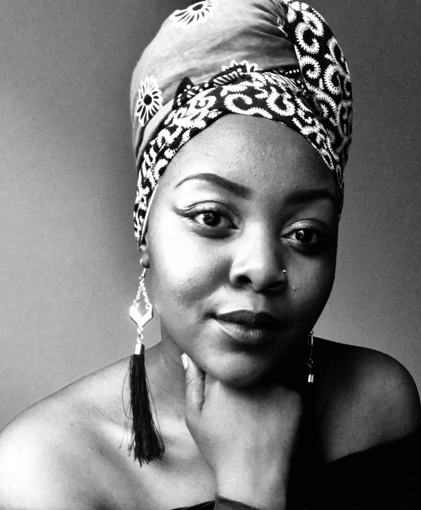

About Me:
My name is Nechia Joia Khuzwayo, I am one of nine children. I went to the Julius Sebolia Primary School in Braamfisherville which is also my hometown. I went to high school in Roodepoort at the Tulip Combined School and completed my matric in 2015. Growing up I always considered myself different, as I always felt comfortable with a small number of friends. I was never much of an extrovert and always preferred being in a quiet meditative state. This does not mean that I am shy to speak my mind. I am currently completing my degree in BCom information Management at the University of Johannesburg as well as doing an internship in UX Strategy department at Umuzi based in Jeppestown, Johannesburg.
As a multi skilled woman, I am always looking forward to growing and learning new material. I am an excellent multitasker. Always learning, I also love travelling, dressing up and cooking gives me something that requires me to think and use my hands and have an awesome experience. I usually dress in monochrome colours however I enjoy an array of colour when it comes to all things art.
